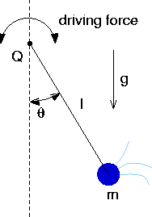
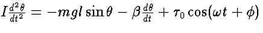
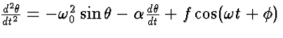
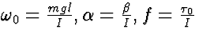

A Chaotic Pendulum in Phase Space with Java
Equation of Motion
A pendulum is displaced from the vertical by an angle theta,
and moves through a viscous medium with frictional coefficient beta. An
external, periodic torque is also applied to the pendulum. Although
simple, this system displays chaotic behavior (similar to that in which the
pivot point of the pendulum is made to oscillate). Newton's laws
of rotational dynamics tells us that the moment of inertia I times the
angular acceleration equals the sum of torques due to gravity, friction,
and driver:

We divide by the moment of inertia to obtain a second order, nonlinear,
ordinary differential equation in standard form:

where omega without a subscript is for the external driver
and the other constants are

Next: What are Pendulum Applets
Back: Main Page